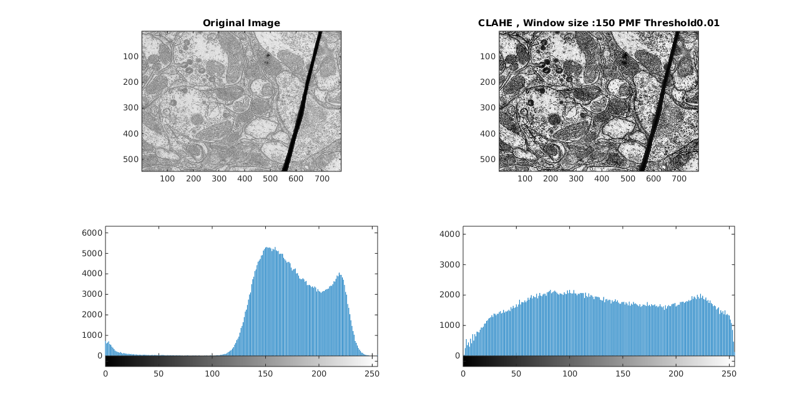

Question 2 Gray Level Transformations
Contents
Linear Contrast Stretching
The function myLinearContrastStretching is written to implement contrast stretching by stretching the histogram of X to Y image over 0 to 255. The function can handle both single channel ( Grayscale ) and three channel ( RGB ) images .
The transformation function for each pixel used here is
Obserbvations
Contrast Stretching only works when pixel values lies within a partial part but not covering the whole 0 to 255 intensity bins. If there are pixels with 0 and 255 intensity levels then contrast stretching will not work .
tic; im=imread('../data/TEM.png'); myLinearContrastStretching(im,'TEM.png'); im=imread('../data/canyon.png'); myLinearContrastStretching(im,'canyon.png'); im=imread('../data/barbara.png'); myLinearContrastStretching(im,'barbara.png'); toc;
Warning: Image is too big to fit on screen; displaying at 36% scale. Warning: Image is too big to fit on screen; displaying at 36% scale. Warning: Image is too big to fit on screen; displaying at 44% scale. Elapsed time is 2.017051 seconds.
Histogram Equalization
It Is A Process To Convert A Histogram To Uniform Distribution . Here Histogram Equalization Is Achieved By The Following Steps .
Histogram = Compute Histogram Of Image(Im)
Pmf = Pmf(Histogram)
Cdf = Cumulative Sum(Pmf)
For Each Pixel P
New_P=Cdf(P) * 255
Endtic; im=imread('../data/barbara.png'); res=myHE(im,1); imwrite(res,'../images/B/barbara.png'); im=imread('../data/TEM.png'); res=myHE(im,1); imwrite(res,'../images/B/TEM.png'); im=imread('../data/canyon.png'); res=myHE(im,1); imwrite(res,'../images/B/canyon.png'); toc;
Elapsed time is 1.872913 seconds.


Adaptive Histogram Equalization
Adaptive Histogram Equalization is performed on the Image as with given window size N=150 as it looks like the perfect window size.
To deal with the boundary pixels the image is mirrored on each side with N pixels .
After that the following process is follwed in the image
for each pixel p in image hist=histogram of roi of im with pixel p in center and NxN window pmf=histogram/total_pixel_count cdf=calcualte cdf from pmf new_image(p)=cdf(p)*255
Here the window size manually tuned and the results are following .
tic; im=imread('../data/barbara.png'); res=myAHE(im,150,1); imwrite(res,'../images/C/barbara.png'); im=imread('../data/TEM.png'); res=myAHE(im,150,1); imwrite(res,'../images/C/TEM.png'); im=imread('../data/canyon.png'); im(:,:,1)=myAHE(im(:,:,1),150,0); im(:,:,2)=myAHE(im(:,:,2),150,0); im(:,:,3)=myAHE(im(:,:,3),150,0); figure('Name','AHE on RGB Image with Window Size 150'); image(im); title('AHE On RGB Image with Window Size 150'); axis image set(gcf, 'Units', 'Normalized', 'OuterPosition', [0 0 1 1]); imwrite(im,'../images/C/canyon.png'); toc;
Elapsed time is 362.797880 seconds.
Computing AHE on Barbara Image with Window Size 50 and Window Size 200
In the Low Window Size Image it can be seen that lower Contrast Areas are more enhanced highly but on the same time noise in the image is also enhanced .
tic; im=imread('../data/barbara.png'); res=myAHE(im,50,1); imwrite(res,'../images/C/barbara_lower.png'); im=imread('../data/barbara.png'); res=myAHE(im,200,1); imwrite(res,'../images/C/barbara_higher.png'); % toc;
Elapsed time is 127.061086 seconds.
Contrast Limited Adaptive Histogram Equalization
CLAHE does the same job as AHE but it limits clips the pmf at a threshold value and distributes the mass equally to other bins while calculating the cdf
To deal with the boundary pixels the image is mirrored on each side with N pixels .
After that the following process is follwed in the image
for each pixel p in image hist=histogram of roi of im with pixel p in center and NxN window pmf=histogram/total_pixel_count clip pmf at thresh and distribute the mass equally over all bins cdf=calcualte cdf from pmf new_image(p)=cdf(p)*255
im=imread('../data/barbara.png'); res=myCLAHE(im,150,0.01,1); imwrite(res,'../images/D/barbara.png'); im=imread('../data/TEM.png'); res=myCLAHE(im,150,0.01,1); imwrite(res,'../images/D/TEM.png'); im=imread('../data/canyon.png'); im(:,:,1)=myCLAHE(im(:,:,1),150,0.01,0); im(:,:,2)=myCLAHE(im(:,:,2),150,0.01,0); im(:,:,3)=myCLAHE(im(:,:,3),150,0.01,0); figure('Name','CLAHE on RGB Image with Window Size 150 Threshold 0.01'); image(im); title('CLAHE On RGB Image with Window Size 150 and Threshold 0.01'); axis image set(gcf, 'Units', 'Normalized', 'OuterPosition', [0 0 1 1]); imwrite(im,'../images/D/canyon.png');
Computing CLAHE on Images with Histogram Threshold 0.005
Here we are taking the Hitogram Threshold 0.005 which is half of the previously tuned Histogram Threshold 0.01
im=imread('../data/barbara.png'); res=myCLAHE(im,150,0.005,1); imwrite(res,'../images/D/barbara_2.png'); im=imread('../data/TEM.png'); res=myCLAHE(im,150,0.005,1); imwrite(res,'../images/D/TEM_2.png'); im=imread('../data/canyon.png'); im(:,:,1)=myCLAHE(im(:,:,1),150,0.005,0); im(:,:,2)=myCLAHE(im(:,:,2),150,0.005,0); im(:,:,3)=myCLAHE(im(:,:,3),150,0.005,0); figure('Name','CLAHE on RGB Image with Window Size 150 Threshold 0.005'); image(im); title('CLAHE On RGB Image with Window Size 150 and Threshold 0.005'); axis image set(gcf, 'Units', 'Normalized', 'OuterPosition', [0 0 1 1]); imwrite(im,'../images/D/canyon_2.png');